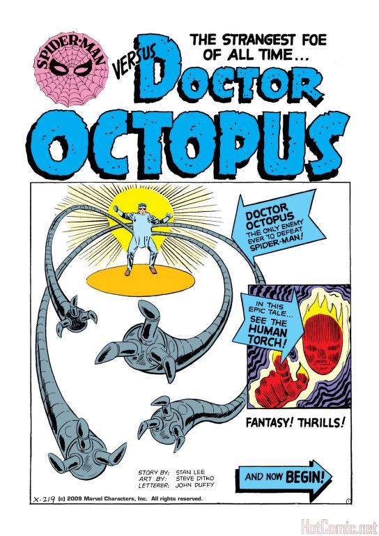

The Amazing Spider-Man Issue #3, published in 1963, introduces one of Spider-Man’s most iconic villains: Doctor Octopus. In this issue, Spider-Man faces the challenge of defeating the evil genius, who wields mechanical tentacles to wreak havoc on the city.
Key Details:
This issue is a fan favorite, marking a pivotal moment in Spider-Man's early storylines.
Click here to read the full comic on Archive.org.